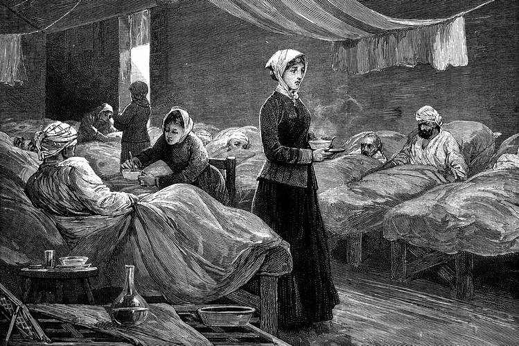

Florence Nightingale
She was the founder of modern nursing.

Florence Nightingale bringing soup and nursing to patients in an hospital
Early Life
- 12 May 1820. Florence Nightgale was born into a rich, upper-class British family in Florence, Italy.
- 1821. The family moved to England at Embley Hampshire.
- February 1837. She takes the decision to dedicate her life to the service of others.
- 1838.The family make an European Tour. On that tour, Florence meet Mary Clark with whom she bonded. Clark show Florence that women could be equals to men.
- 1844. She announce her decision to be a nurse. Despite the anger and distress of her mother and sister, she rebelled against the expected role for a woman of her status to become a wife and a mother. Sheworked hard to educate herself in the art and science of nursing.
- 1847. Rome. She met Sidney Herbert, a politician who had been Secretary at War, who was in honeymoon. They became lifelong friend. He was Secretary of War again during Crimean War. His wife and he facilitate Florence's nursing work in Crimea. She became Herbert's key adviser throughout his political career
- January 1850. She visited the Lutherian community in Germany, where she observed Pastor Theodor Fliedner and the diaconesses working for the sick and the deprived.
- 1851. She received 4 months of medical training at the institute which formed the basis for her later.
- August 1853. She took the post of superintendent at the institute for the care of sic Gentlewomen in Upper Harley Street, London. She held that position until October 1854
Crimean War
- 21 October 1854. Florence and 38 women volunteer nurses that she trained and 15 Catholic nuns were sent to the Ottoman Empire. Her team found that poor care for wounded soldiers in the face of official indifference. Medicines were in short supply, hygiene was being neglected, and mass infections were common, many of them fatal. She send a plea to The Times for a government solution to the poor condition of the facilities. The result was Renkioi Hospital. Florence reduced the death rate from 42% to 2% by making improvements in hygien. She implemented handwashing. This experience influenced her later career, when she advocated sanitary living conditions as a great importance. Consequently, she reduced peacetime deaths in the army and turned her attention to the sanitary design of hospitals and the introduction of sanitation in working-class homes.
Later Career
- 29 November 1855. The Nightingale Fund was established for training of nurses during a public meeting to recognise Florence for her work in the war.
- 1859. She wrote Notes on Nursing. It was written specifically for the education of those nurse at home. She wrotes "Every day sanitary knowledge, or the knowledge of nursing, or in other words, of how to put the constitution in such a state as that it will have no disease, or that it can recover from disease, takes a higher place. It is recognised as the knowledge which every one ought to have – distinct from medical knowledge, which only a profession can have".
- 16 May 1865. The first trained Nightingale nurses began work at Liverpool Workhouse infirmary.
- 13 August 1910. At the age of 90, she died peacefully in her sleep.
To learn more about Florence Nightingale, you can take this link Wikipedia.